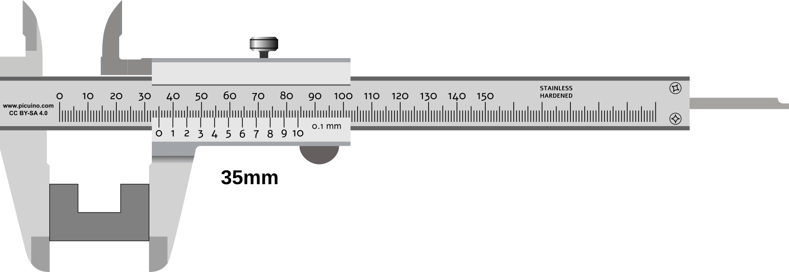
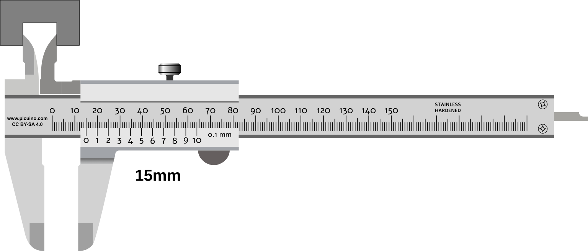
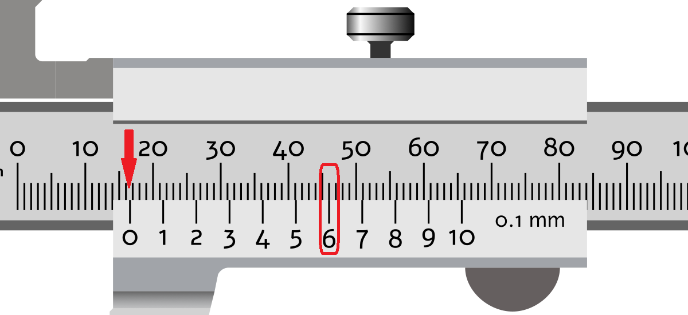
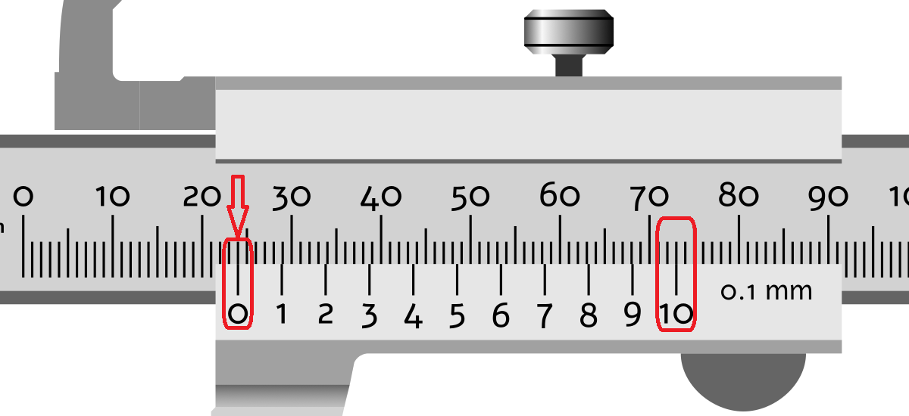

The Vernier Caliper¶
The vernier caliper, also called a caliper, is a measuring instrument that provides greater precision than a millimeter ruler.
The caliper has several jaws and a depth probe that make it easy to measure external diameters, internal diameters, and depths.
The vernier scale is an auxiliary scale that allows distance measurements with a precision ranging from 0.1 millimeters to 0.02 millimeters. This precision is ten times greater, or more, than that of a millimeter ruler.
Parts of the Vernier Caliper¶
A vernier caliper is made up of the following parts:

Parts of a vernier caliper.¶
- External measuring jaws.
- Internal measuring jaws.
- Depth probe.
- Main millimeter scale.
- Vernier scale for reading fractions of a millimeter.
- Sliding thumbwheel.
- Locking screw.
- Slider (moving part of the caliper).
- Beam (fixed part of the caliper).

The slider of a caliper moving along the beam.¶
How to Measure with a Caliper¶
The following images show how to measure the exterior, interior, and depth of a part using a vernier caliper.
Measuring external dimensions¶
- Open the external measuring jaws (1) and place the object between them.
- Slide the jaws closed until they touch the object without applying excessive force.
- Read the main scale (the mark immediately before the zero on the vernier scale).
- Read the vernier scale (the number whose line aligns with a line on the main scale).
- Add both readings to obtain the final measurement.
{kind=link}

A caliper taking an external measurement.¶
Measuring internal dimensions¶
- Close the internal measuring jaws (2) and place them inside the gap or hole to be measured.
- Slide the jaws open until they touch the object without applying excessive force.
- Read the main scale (the mark immediately before the zero on the vernier scale).
- Read the vernier scale (the number whose line aligns with a line on the main scale).
- Add both readings to obtain the final measurement.
{kind=link}

A caliper taking an internal measurement.¶
Measuring Depth¶
- Close the caliper and place its rear face against the opening to be measured, as shown in the figure below.
- Slide the depth rod outward until it touches the bottom of the object without applying excessive force.
- Read the main scale (the mark immediately before the zero on the vernier scale).
- Read the vernier scale (the number whose line aligns with a line on the main scale).
- Add both readings to obtain the final measurement.

A caliper taking a depth measurement.¶
Reading the Vernier Scale¶
The whole-millimeter measurement can be read on the main scale at the position of the zero mark on the vernier scale.
The tenths-of-a-millimeter measurement can be read at the point where one of the lines on the vernier scale aligns exactly with a line on the main scale.
{kind=link}

Measurement of a distance of 16.6 millimeters.¶
The zero mark is past 16 millimeters but has not yet reached 17 millimeters on the upper scale.
The 6 mark on the vernier scale aligns with a mark on the upper scale.
{kind=link}

Measurement of a distance of 24.0 millimeters.¶
The zero mark aligns with 24 millimeters on the upper scale.
The only mark on the vernier scale that aligns with a mark on the main scale is the zero mark.

Measurement of a distance of 9.9 millimeters.¶
The zero mark is past 9 millimeters but has not yet reached 10 millimeters on the upper scale.
The 9 mark on the vernier scale aligns with a mark on the upper scale.
Virtual Vernier Caliper¶
Simulation of a caliper with a precision of 0.05 millimeters.
Measurement exercises¶
Worksheet with exercises for reading measurements using a vernier caliper.